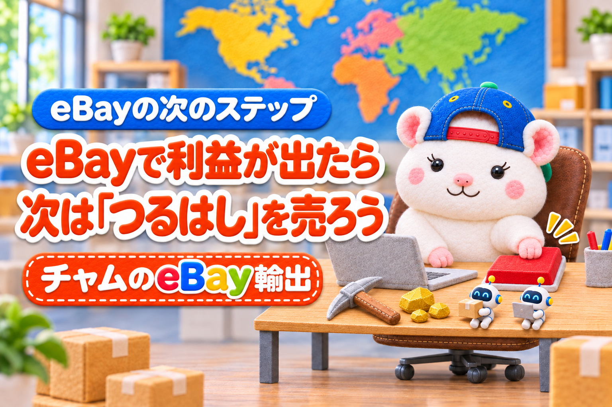

eBayで利益が出るようになったら、次にやってほしいことがあります。
「つるはし」を売ることです。
ゴールドラッシュで、金を掘るのではなく、金を掘るつるはしを売る。
今日は、すこし趣向を変えて、この話をします。
この記事を読んでくださっているあなたは、毎日eBayをがんばっていると思います。
少なからず、ノウハウがある。
実績もある。
利益も出た。
eBayのことも、だいぶ分かってきた。
そうなったら、次のステップです。
つるはしを売るまでは、この5つの段階です。
- eBayで、真正面から稼ぐ
- 手が要る作業は外注、それ以外はAIに任せる
- ツールは、AIで自作する
- 自分のやり方にする(守破離)
- つるはしを売る
この記事を書いた人

この記事は、前は外注さん21名でeBayを回し、いまは梱包以外をAIに任せたチャムが書いています。
初月から利益10万4,286円。
自分の店のやり方とツールは、教科書にして売っています。
次のステップは、外注化とAI化
まずは、自分の手を空けます。
梱包は、人にしかできません。
だから、外注さんにお願いします。
それ以外は、人に頼むか、AIに任せます。
| 作業 | 任せる先 |
|---|---|
| 梱包・発送 | 外注さん(人) |
| リサーチ | AIか外注さん |
| 出品 | AIか外注さん |
| 価格の調整 | AI |
| お客さんへの返信 | AIの下書き→自分で確認 |
任せる順番と、人に頼むやり方は、前の記事にまとめています。


ツールは、AIで自作する
在庫管理ツール、出品ツール、メッセージツール。
コンサルやコミュニティで配られているものを使っている人も多いと思います。
それを、AIで自作してみてください。
「こういうツールを作って」と言えば、AIは作ってくれます。
自作すると、いいことが3つあります。
- 自分の店に合わせて作れる
- 気になったところを、その日のうちに直せる
- ツールそのものに、月額がかからない
配られているツールは、だれにでも合うように作られています。
自作したツールは、あなたの店にだけ合うように作れます。
いわば、上位互換です。
使いながら「ここをこうしたい」が出てきたら、AIに伝えて直してもらう。
これをくり返すと、どんどん自分に最適なツールになっていきます。
例えば、ぼくの店では、CPaSSの入力を1日で拡張機能にしました。

ぼくはeBay Japanに問い合わせて、書面で回答をもらった範囲でAIを使っています。
- 公式のAPIを使う
- 買い手の個人情報や、本文の中で人を特定できる情報をAIに渡さない
- AIでブラウザからeBayの画面を開かない
AIをどこまで使うかは、各サービスの規約を確かめたうえで、ご自身の責任で決めてください。
自分のやり方ができたら、守破離の「離」
外注とAIで手を空けて、ツールも自作する。
そうすると、だれかに教わったやり方が、いつの間にか自分のやり方になっています。
いわゆる、守破離です。
茶道や武道でいう、修業の3つの段階です。
| 段階 | 意味 | eBayでいうと |
|---|---|---|
| 守 | 教わった型を守る | 教わったやり方と、配られたツールで稼ぐ |
| 破 | 型を自分に合わせて崩す | 外注・AIに任せ、ツールを自作する |
| 離 | 自分のやり方で立つ | eBayで稼ぎながら、つるはしを売る |
「離」まで来たら、eBayで真正面から稼ぐのと同時に、つるはしを売りましょう。
つるはしとは、あなたが自分のために作ったものです。
自作したツール。
自分の店で回しているやり方。
つまずいて、乗りこえた記録。
「私なんかには無理」は、思い込み
こういう話をすると、「私なんかには無理」と言う人がいます。
まったく、そんなことはありません。
あなたが自分で作ったツールは、あなたが使いたいツールです。
あなたが使いたいなら、ほかのだれかも使いたい。
自分は、そんなに特別ではありません。
試しに、noteやBrainやXで売ってみてください。
Xで、みんなと心をこめたやりとりをしているあなたなら、買ってくれる人がいるかもしれません。
そして、よそに出すときは、中途半端なものは出せません。
説明を書き直し、だれが使っても動くように直す。
そうやってブラッシュアップしていくと、自分のeBayの腕が上がります。
作る、売る、直す、腕が上がる、eBayの利益も伸びる。
どんどん好循環に入っていきます。
例えば、ぼくの店では、店のやり方を教科書にまとめて、11月1日の時点で46部を買っていただきました。
付録には、ぼくの店で毎日使っているツールを、だれでも使える形にして入れています。
「無理」と思う人が多いほど、おいしい
「私なんかには無理」と思う人が多い。
じつは、それがおいしいところです。
それは、参入障壁だからです。
eBayも同じです。
eBayをやっているぼくらからしたら、壁なんて何もありません。
利益が出るから、やったほうがいいと言いますよね。
でも、多くの人は「英語が無理」「パソコンが苦手だから」と言って、やりません。
やらないから、やっているぼくらが、うまみを受けとれる。
つるはしも、同じです。
「私なんかには無理」と思う人が多いほど、売る人は少なくなります。
ただし、真正面から稼ぐのが先
もちろん、eBayで真正面から稼ぐことがいちばん大事です。
それがないと、つるはしは作れません。
金を掘ったことがない人のつるはしは、だれも使いたくないからです。
自分の店で使って、利益が出たツールとやり方だから、ほかの人も使いたくなります。
そのうえで、いまはAIがこれだけ発達しています。
前とは、状況がちがいます。
ツールを作るのに、プログラムの知識はいりません。
「こういうツールを作って」と伝えるだけです。
だから、AIを使って、つるはしを作ってみることをおすすめします。
まとめ
eBayで利益が出たら、次はつるはしを売りましょう。
つるはしを売るまでは、この5つの段階です。
- eBayで、真正面から稼ぐ(これがないと、つるはしは作れない)
- 手が要る作業は外注、それ以外はAIに任せる(梱包は人)
- ツールは、AIで自作する(自分の店に合う上位互換)
- 自分のやり方にする(守破離の「離」)
- つるはしを売る(note・Brain・Xで、まず試しに)
「私なんかには無理」と思う人が多いほど、つるはしを売る人は少なくなります。
それが、参入障壁です。
あなたが自分のために作ったツールで、ほかのだれかが助かるとしたら、どれですか?🐹
▼中の人🏠(レンタルスペース23部屋・売上1.5億)のレンスペ実録

▼ブログ(eBay×レンスペ、全記事まとめ)

▼この店のやり方は、ぜんぶ1冊にまとめてあります
リサーチ・出品・値付け・顧客対応まで、初月利益10万4,286円を出した実店舗の記録と手順を全部書いた教科書です。
読んだその日から、AI社員の作り方をそのまま真似できます。
『AI × eBay輸出の教科書 — 梱包以外、ぜんぶAI』


🎁 2026年10月22日に第3版になりました。顧客対応 完全自動化ツール・ストアドクター・AI自動化コーチなど付録6つは、これまでに買った人も含めて購入者全員に無料で受け取れます。
内容・最新価格は販売ページをご確認ください。